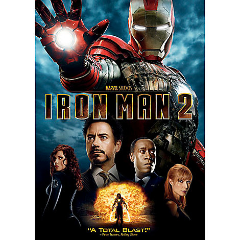
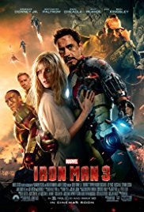

Iron Man is a 2008 American superhero film based on the Marvel Comics character of the same
name, produced by Marvel Studios and distributed by Paramount Pictures.1 It is the first film
in the Marvel Cinematic Universe (MCU). The film was directed by Jon Favreau, with a screenplay
by the writing teams of Mark Fergus and Hawk Ostby and Art Marcum and Matt Holloway. It stars
Robert Downey Jr. as Tony Stark / Iron Man, alongside Terrence Howard, Jeff Bridges, Shaun Toub,
and Gwyneth Paltrow. In Iron Man, Tony Stark, an industrialist and master engineer, builds a
powered exoskeleton and becomes the technologically advanced superhero Iron Man.
Iron Man premiered in Sydney on April 14, 2008, and was released in the United States on May 2,
2008. The film was a critical and commercial success, grossing over $585 million and garnering
critical acclaim. Downey's performance as Tony Stark was particularly praised. The American Film
Institute selected the film as one of the ten best of the year. It was also nominated for two
Academy Awards for Best Sound Editing and Best Visual Effects
Directed by Jon Favreau
Produced by
Avi Arad
Kevin Feige
Screenplay by
Mark Fergus
Hawk Ostby
Art Marcum
Matt Holloway
Based on Iron Man by
Stan Lee
Larry Lieber
Don Heck
Jack Kirby
Starring
Robert Downey Jr.
Terrence Howard
Jeff Bridges
Shaun Toub
Gwyneth Paltrow
Music by
Ramin Djawadi
Cinematography
Matthew Libatique
Edited by
Dan Lebental
Production company
Marvel Studios
Fair view Entertainment
Distributed by
Paramount Pictures
Release date
April 14, 2008 (Sydney premiere)
May 2, 2008 (United States)
Running time
126 minutes
Country
United States
Language
English
Budget
$140 million
Box office
$585.2 million

Iron Man 2 is a 2010 American superhero film based on the Marvel Comics character Iron Man,
produced by Marvel Studios and distributed by Paramount Pictures. It is the sequel to
2008's Iron Man, and is the third film in the Marvel Cinematic Universe(MCU). Directed by
Jon Favreau and written by Justin Theroux, the film stars Robert Downey Jr. as Tony
Stark / Iron Man, alongside Gwyneth Paltrow, Don Cheadle, Scarlett Johansson, Sam Rockwell,
Mickey Rourke, and Samuel L. Jackson. Six months after the events of Iron Man, Tony Stark is
resisting calls by the United States government to hand over the Iron Man technology while
also combating his declining health from the arc reactor in his chest. Meanwhile, rogue
Russian scientist Ivan Vanko has developed the same technology and built weapons of his own
in order to pursue a vendetta against the Stark family, in the process joining forces with
Stark's business rival, Justin Hammer.
Directed by
Jon Favreau
Produced by
Kevin Feige
Screenplay by
Justin Theroux
Based onIron Man
by
Stan Lee
Larry Lieber
Don Heck
Jack Kirby
Starring
Robert Downey Jr.
Gwyneth Paltrow Don Cheadle
Scarlett Johansson
Sam Rockwell
Mickey Rourke
Samuel L. Jackson
Music by
John Debney
Cinematography
Matthew Libatique
Edited by
Dan Lebental
Richard Pearson
Production
company
Marvel Studios
Fairview Entertainment
Distributed by
Paramount Pictures
Release date
April 26, 2010 (El Capitan Theatre)
May 7, 2010 (United States)
Running time
125 minutes
Country
United States
Language
English
Budget
$200 million
Box office
$623.9 million

Iron Man 3 (stylized onscreen as Iron Man Three) is a 2013 American[4] superhero film
based on the Marvel Comics character Iron Man, produced by Marvel Studios and
distributed by Walt Disney Studios Motion Pictures.1 It is the sequel to 2008's Iron
Man and 2010's Iron Man 2, and the seventh film in the Marvel Cinematic Universe (MCU).
he film was directed by Shane Black from a screenplay he co-wrote with Drew Pearce, and
stars Robert Downey Jr. as Tony Stark / Iron Man, alongside Gwyneth Paltrow, Don Cheadle,
Guy Pearce, Rebecca Hall, Stephanie Szostak, James Badge Dale, Jon Favreau, and Ben
Kingsley. In Iron Man 3, Tony Stark deals with posttraumatic stress disorder caused by
the events of The Avengers, while investigating a string of terrorist attacks led by the
terious Mandarin, and comes into a conflict with an old enemy: Aldrich Killian.
After the release of Iron Man 2 in May 2010, Favreau, who served as director, decided not to return,
nd in February 2011 Black was hired to write and direct the film. Black and Pearce opted to make the
script more character-centric and focused on thriller elements, which also uses concepts from the
"Extremis" story arc by Warren Ellis
Directed by
Shane Black
Produced by
Kevin Feige
Screenplay by
Drew Pearce
Shane Black
Based onIron Man
by
Stan Lee
Don Heck
Larry Lieber
Jack Kirby
Starring
Robert Downey Jr.
Gwyneth Paltrow
Don Cheadle
Guy Pearce
Rebecca Hall
Stephanie Szostak
James Badge Dale
Jon Favreau
Ben Kingsley
Music by
Brian Tyler
Cinematography
John Toll
Edited by
Jeffrey Ford
Peter S. Elliot
Production
company
Marvel Studios
Distributed by
Walt Disney Studios
Motion Pictures1
Release date
April 14, 2013 (Grand Rex)
May 3, 2013 (United States)
Running time
130 minutes
Country
United States
Language
English
Budget
$200 million (gross)
$178.4 million (net)
Box office
$1.215 billion